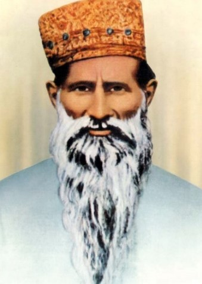
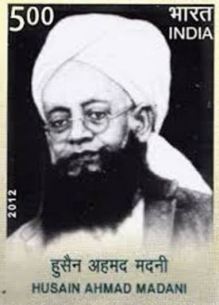
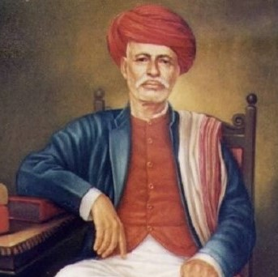
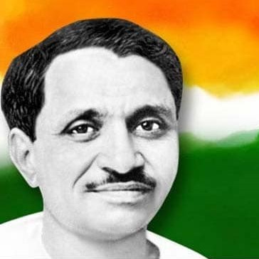
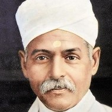
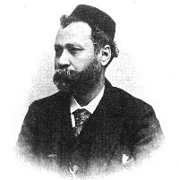
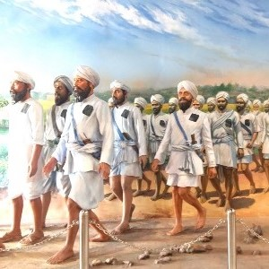

| YEAR | MOVEMENT | WHO | OBJECTIVE | EVENTS | OTHERS | |
|---|---|---|---|---|---|---|
| 1782 | TITU MIR'S MOVEMENT |  |
MIR NITHAR ALI | Wahhabism & Sharia | Organized Bengal Muslim peasants against Hindu landlord & British indigo planters | Ali killed in 1831 |
| 1812 |
FARAIZA MOVEMENT
(Fara'idi)
@E.Bengal
|
 |
HAJI SHARIATULLAH DUDU MIAN |
Islamic pillar of faith
Eradication of social innovation, unislamic practices
|
|
|
| 1830 |
YOUNG BENGAL MOVEMENT
@Bengal
|
|
Radical, intellectual trend among youth
#Surendranath describes him:
“Pioneers of Modern civilization”
|
|
Studied @Hindu college
Inspiration: French Revolution
In 1831 removed from college
Main reason for limited success:
|
|
| 1830 | DHARMA SABHA |  |
RADHAKHANT DEB |
|
|
|
| 1849 |
PARAMAHANSA MANDALI
@Maharastra
(Branches @Poona, Satara)
|
DADOBA PANDURANG MEHTAJI DURGARAM |
|
Primarily interest: Break caste rules, food cook low caste taken, widow remarriage, women education | Ideology: Closely linked to MANAV DHARMA SABHA | |
| 1849 |
WAHABI/WALLIULLAH MOVEMENT
(refer-revolt)
|
 |
Desirability of harmony between 4 school of Muslim (which is divided) | Main role in Revolt 1857 - spread anti-British feelings | ||
| 1851 | PARSI REFORM MOVEMENT |
RAHNUMAI MAZDAYASNAN SABHA
(group of educated parsis)
|
|
Newspaper:
RAST GOFTAR
|
Emerged as most westernised section | |
| 1861 |
RADHASWAMI MOVEMENT
@Agra
|
 |
SHIV DAYAL SAHEB
(TULSI RAM)
|
|
Work of faith, charity, service, prayer
All religion to be true
|
|
| 1866 |
DEOBAND SCHOOL
@Darul Uloom UP
|

SHIBLI
|
Supporter: SHIBLI NUMANI
|
|
Train religious leaders, moral religious regeneration
(Contrast to Aligarh-West education, support govt)
#HASAN: gave political & intellectual content to religious ideas
Synthesis of ISLAMIC PRINCIPLES + NATIONALIST ASPIRATION
#ULEMA: gave concrete shape to Hussan idea- protection of political religious rights in context of National unity
|
Welcomed INC (not opposed)
Issued FATWA against Syed Ahmed's-United Patriotic Association Mohammaden Anglo-Orientation Association
--------------------------------------------------------------------------------------------------------------------
#SHIBLI: Favoured inclusion of English, European science in education
Founded: DHARUL ULOOM + NADWATAL ULAMA @Lucknow
Believed: Idealism of INC & Co-operation bet Hindu Muslim
|
| 1867 |
PRARTHANA SAMAJ
@Bombay
|
 Dhondo Keshav Karve
|
ATMARAM PANDURANG
(Help- Kesab chandra sen)
1870:MAHADEO GOVIND RANADE
|
Secret society to Spread liberal ideas
Encourage breakdown of caste barriers
MONOTHEISM but mainly social reform than religion reform
Relied on education, importance to reason, not on confrontation-orthodox
|
Mahadeo efforts- Samaj gained all India character
Sabha: Very attached to BHAKTI CULT of Maharashtra
|
Precursor: Paramahansa Sabha
#KARVE+RANADE- founded Widow Remarriage Association & Widow Home Association
To provide education, train widows
|
| 1872 |
THEOSOPHICAL MOVEMENT
@New York
@Adyar1875
|
 |
1907-ANNIE BESANT president
|
Accepted Hindu beliefs- Karma, Reincarnation
Inspiration: Upanishad, yoga, Samkhya, Vedanta school
Aim: Universal brotherhood-without race, caste, colour
To investigate unexplained law of nature, power latent in man
|
oppose- Child marriage, caste, Improve widows conditions |
Came to Allied with HINDU RENAISSANCE,
At one time with Arya samaj also
#Provided common denominator-for various sects, fulfilled urge of educated Hindus
But for average person lacked positive program,
Impact limited to small westernised segment
As a Religion revivers not succeeded,
But as a movement of glorifying Indian religious, Philosophy traditions - gave much self-respect to India against British rule
But if viewed in another perspective- it gave false sense of pride to Indians (Backward outdated Traditions)
|
| 1873 |
SATYASHODHAK SAMAJ
@Maharastra
|
 |
|
Powerful movement-against upper class domination, Brahmanical supremacy
Aim: Social service education among Low caste, women
Complete abolition of caste, social economic inequalities
|
Gave Leaderships to: Malis, Telis, Saris, Kunbis, Dhangars
|
Phule works: GULAMGIRI
SARVAJANIK SATYADHARMA
used Symbol of RAJAH BALI opposed to Brahmins Symbol of RAMA
|
| 1873 |
SINGH SABHA MOVEMENT
@Amritsar
|
 |
Modern education to Sikhs
To counter activities- Christain missionary, Bramho, Arya, Muslim maulvis
|
Khalsa school throughout Punjab |
Everything that is against guru teachings are rejected
Rites/Customs which are Consistent with Sikh doctrine are accepted
|
|
| 1887 |
DEV SAMAJ
@Lahore
|
 |
SHIV NARAYAN AGNIHOTRI |
Eternal of soul
Supremacy of guru
Ideal social behaviours- No alcohol, bribe, violence, non veg
|
DEVA SHASTRA BOOK |
SN Agnihotri - Brahmo follower
Spoke against Child marriage
|
| 1887 | INDIAN SOCIAL CONFERENCE |
|
MG RANADE
RAGUNATH RAO
|
|
PLEDGE MOVEMENT- inspire people against Child marriage |
1st session@Madras
(same venue with INC)
Social reform cell of INC
|
| 1889 | AHMADIYYA MOVEMENT | MIRZA GHULAM AHMAD |
Sect of Islam origin in India
Liberal principles, Western Liberal Education
Mohammedan Renaissance
|
Ideologies:
|
||
| 1902 |
BHARAT DHARMA MAHAMANDALA
@Varanasi
|


|
PANDIT DIN DAYALU SHARMA
MADAN MOHAN MALAVYA prominent
|
Defence of Orthodox Hinduism
|
Merged 3:
SANATANA DHARMA SABHA+
DHARMA MAHA PARISHAD (S.IND) +
DHARMA MAHAMANDALA (Bengal)
All combined in 1902
|
Opened Hindu college- Din Dayal |
| 1903 |
ARUVIPPURAM SREE NARAYANA GURU DHARMA PARIPALANA YOGAM (SNDP)
|
 |
SREE NARAYANA GURU SWAMY (Chairman)
KUMARAN ASAN (General secretary)
|
All religions be same
Condem Animal sacrifice
SNDP: Right of admission in public schools, Pol representation, Access to roads, Recruit to govt services, Temple entry
Upward social mobility
|
Urged Ezhavas leave toddy tapping, stop liquor drinking
|
EZHAVAS (low caste, untouchables, Toddy tappers) had conflict with upper caste
Not allowed into temple
single largest group of kerala 26%
Guru took stone @R.Neyyar- as Linga @Aruvippuram 1888 to show idol not monopoly of highercaste
#Inspired Kumaran Asan poet
#1889: Aruvipurram Khestra Yogam-To help Ezhavas progress
#1903:SNDP brought Under
Indian companies Act
|
| 1905 | SERVANTS OF IND SOCIETY |
  |
GOPAL KRISH GOKUALE
(liberal leader of INC)
1915- Gokuale die
SRINIVASA SHASTRI
|
To train national missionaries
changes by constitutional means
make sure youngster to stay away from political activities, INC
NOW: Still works- education, ashrams for tribal girls, Balwadis
|
Prepare cadre of selfless workers to devote life for country in religious spirit |
Helped by: MG RANADE
1911- HITAVADA -published to protect society views
|
| 1905 |
VOKKALIGA SANGHA
@Mysore
|
Anti-Brahmin movement | ||||
| 1908 | SEVA SADAN |  |
DIWAN DAYARAM GIDUMAL
|
Child marriage, Widow remarriage,
Taking care exploited women,
give education on medical welfare services
food to all caste
|
led to AGE OF CONSENT ACT
(Female age consent)
|
|
| 1917 |
JUSTICE MOVEMENT
@Madras
|
P. THEAGARAYA CHETTY
C. NATESA MUDALIAR
T. MADHAVA NAIR
|
To secure job for Non Brahmins in legislature |
Madras Presidency Association- formed
Demand: separate representation for lower caste in legislature
|
||
| 1920 |
SOCIAL SERVICE LEAGUE
@Bombay
|
NARAYAN MALHAR JOSHI (Gokhale follower) |
Secure masses for Better/
Reasonable conditions and work
|
|
Later he formed ALL IND TRADE UNION FEDERATION 1920 (VV Giri 1st President | |
| 1920 | SELF RESPECT MOVEMENT |  |
“PERIYAR”EV RAMASAMY |
Rejection of Brahmanical religion and culture
Which is primary instrument for exploitation of lower caste
|
Formalised wedding without Priest-to undermine Brahmin position | |
| 1921 | AKHALI MOVEMENT (GURUDWARA REFORM MOVEMENT) |  |
Branch of Singh Sabha Movement |
Liberate Gurudwaras - from Corrupt Udasi Mahants (post became hereditary)
Regional movement but not communal
|
Govt repressed- Nonviolent, Non co-operative satyagraha-akalis
But passed
SIKH GURUDWARAS ACT 1922- Control of gurudwara passed to Sikhs masses - through SHIROMANI GURUDWARA PRABANDHAK COMMITTEE (apex body)
|
Mahants – who are loyal to govt, reactionaries to govt patronage
AKALIS-notable role in National liberation struggle
|
| 1924 | TEMPLE ENTRY MOVEMENT |  |
KP KESAVAN
@Vaikom KL North Travancore
|
Demand- Open temple, roads to untouchables |
|
|
| 1931 (CDM) | TEMPLE ENTRY MOVEMENT |  |
Poet SUBRAMANIYAM TIRUMAMBU
inspired from
K. KELAPPAN
|
Issue of temple entry
@Travancore
|
Entered Guruvayur temple with 6 volunteers, Singing sword of kerala
1936- Maharaja of Travancore- opened all govt control temples to all Hindus
|
Satyagrahis- AK GOPALAN P KRISHNA PILLAI
(1938-Rajaji similar @Madras)
|